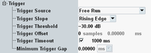

The "Trigger" parameters configure the trigger system for the I/Q recorder measurement.

Selects the source of the trigger event. Some of the trigger sources require additional options.
"Free Run" | The measurement starts immediately after it is initiated. No trigger is used. The remaining trigger settings are not relevant for "Free Run" measurements. See also "Pre Trigger, Post Trigger". |
"IF Power" | The measurement is triggered by the measured power steps. The trigger event is generated after down-conversion of the measured RF signal to the IF band. All other trigger settings apply to this trigger source. Adjust them to the measured power steps. |
"...External..." | External trigger signal fed in via the rear panel of the instrument (availability depends on instrument model). |
"GPRF Gen..." | Trigger event provided by the arbitrary waveform generator of a "GPRF Generator" application. The "GPRF Gen..." trigger events are generated while an ARB file is processed. |
Qualifies whether the trigger event is generated at the rising or at the falling edge of the trigger pulse. This setting has no influence on "Free Run" measurements and for evaluation of trigger pulses provided by other firmware applications.
Defines the input signal power where the trigger condition is satisfied and a trigger event is generated. The trigger threshold is valid for power trigger sources. It is a dB value, relative to the reference level minus the external attenuation ("<Ref. Level> – <External Attenuation (Input)> – <Frequency Dependent External Attenuation>"). If the reference level equals the maximum output power of the DUT and the external attenuation settings are correct, the trigger threshold is relative to the maximum input power.
A low threshold can be required to ensure that the R&S CMW can always detect the input signal. A higher threshold can prevent unintended trigger events.
Defines a delay time for triggered measurements. The trigger offset delays the start of the measurement relative to the trigger event.
Remote command:Sets a time after which an initiated measurement must have received a trigger event. If no trigger event is received, a trigger timeout is indicated in manual operation mode. In remote control mode, the measurement is automatically stopped. The parameter can be disabled so that no timeout occurs.
This setting has no influence on "Free Run" measurements.
Sets a minimum time during which the IF signal must be below the trigger threshold before the trigger is armed so that an IF power trigger event can be generated.
The I/Q recorder measurement is always performed in single-shot mode, therefore it is controlled by a single trigger event. As a consequence the minimum trigger gap condition is valid between the start of the measurement and the first trigger event only.
Remote command: